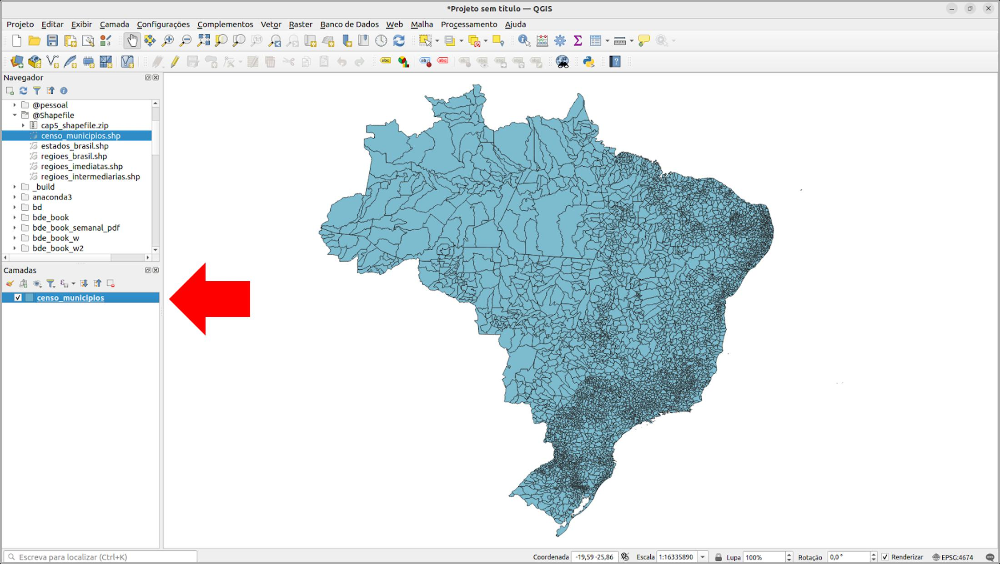
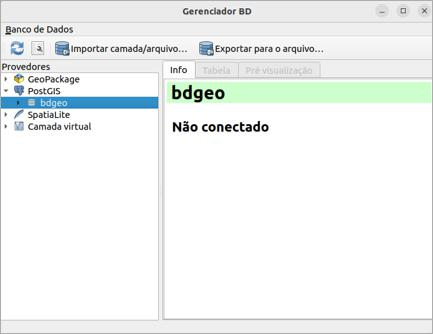
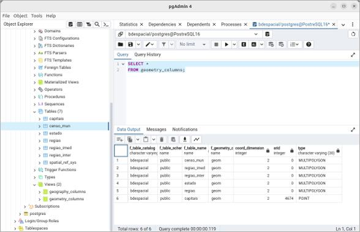

5.MANIPULAÇÃO DE GEOMETRIAS: OPERAÇÕES BÁSICAS COM DADOS ESPACIAIS#
Neste capítulo, você aprenderá a configurar e manipular um ambiente de banco de dados espacial, trabalhando com dados reais do Censo do IBGE. As análises práticas serão realizadas com base no banco de dados introduzido no Capítulo 2, que passou por uma atualização significativa: de uma estrutura exclusivamente alfanumérica para uma plataforma compatível com dados espaciais. Essa evolução amplia suas funcionalidades, permitindo a representação e análise espacial, essenciais para a tomada de decisões baseadas na localização.
Ao final deste capítulo, você terá domínio prático sobre o processamento de dados espaciais e estará apto a aplicar essas técnicas em seus projetos e pesquisas.
Estrutura do Capítulo#
a. Configuração Inicial no PgAdmin
Configuração do ambiente para manipulação de dados espaciais. Conexão ao servidor PostgreSQL, ajuste de permissões, definição de parâmetros de conexão e preparação do banco para receber e processar informações espaciais.
b. Preparação dos Dados do Censo IBGE
Padronização e estruturação dos dados do Censo do IBGE, garantindo sua completude e compatibilidade com as análises espaciais antes da importação para o banco.
c. Importação e Configuração no QGIS
Conexão do banco de dados ao QGIS para importação e visualização dos dados espaciais. Configuração da integração entre os sistemas, ajustes de exibição e preparação para análise e manipulação.
d. Manipulação de Dados no PgAdmin
Ajustes na estrutura do banco de dados para otimizar armazenamento e desempenho. Implementação de índices espaciais e chaves estrangeiras para aprimorar a integridade referencial e a eficiência das consultas espaciais.
e. Verificação de Integridade e Limpeza de Dados
Aplicação de verificações e procedimentos de limpeza para garantir precisão e consistência. Identificação e correção de erros, como geometrias inválidas e dados corrompidos, utilizando as ferramentas disponíveis no PgAdmin.
f. Visualização e Análise Final no QGIS
Verificação da precisão dos dados no QGIS, realização de análises espaciais e interpretação dos resultados gerados após os ajustes e validações.
g. Revisão e Atualização no PgAdmin
Revisão final do banco de dados para garantir integridade estrutural, relações entre tabelas e ajustes necessários, assegurando um ambiente robusto e confiável.
Pré-requisitos:#
Para realizar as atividades deste capítulo, é necessário:
Ter o PostgreSQL, PostGIS, PgAdmin4 e QGIS instalados no computador (ou instalá-los).
Baixar os arquivos shapefile do capítulo 5 disponíveis em:
Arquivos Shapefile - Capítulo 5Acessar o código SQL do capítulo 5 disponível em:
Código SQL - Capítulo 5
Vídeos Complementares do Capítulo 5#
Os vídeos a seguir foram preparados para reforçar e complementar os conceitos abordados no Capítulo 5. Eles apresentam, de forma prática e objetiva, a aplicação dos procedimentos descritos ao longo do capítulo, incluindo configuração do ambiente, importação e manipulação de dados espaciais, validação da integridade dos dados e análises no QGIS.
Ao assistir aos vídeos, você terá uma visão detalhada de cada etapa, acompanhando o fluxo de trabalho desde a configuração inicial no PgAdmin, passando pela importação e estruturação dos dados do IBGE, até a visualização e análise final no QGIS.
Acesse os vídeos:#
Vídeo 1: Configuração Inicial no PgAdmin
Vídeo 2: Preparação dos Dados do Censo IBGE
Vídeo 3: Importação e Configuração no QGIS
Vídeo 4: Manipulação de Dados no PgAdmin
Vídeo 6: Visualização e Análise Final no QGIS
Vídeo 7: Revisão e Atualização no PgAdmin
Aproveite este material complementar para consolidar seu aprendizado e desenvolver uma abordagem mais prática no uso de bancos de dados espaciais.
5.1 Banco de Dados do Censo Demográfico do IBGE#
O banco de dados apresentado no Capítulo 2 foi atualizado para incorporar suporte a dados espaciais, ampliando suas funcionalidades para análises e operações no sistema. A Figura 1 apresenta o projeto lógico do banco de dados atualizado.

Este diagrama representa a estrutura hierárquica e as relações entre municípios, regiões imediatas e intermediárias, estados e regiões para o banco de dados.
Principais mudanças da versão anterior para a atual
a. Inclusão de Atributos Geométricos
A principal modificação no banco de dados foi a adição do atributo geom em todas as tabelas existentes. Antes, as tabelas censo_mun, regiao_imed, regiao_inter, estado e regiao armazenavam apenas informações alfanuméricas. Agora, cada uma dessas tabelas inclui um campo de geometria espacial:
geom GEOMETRY(MULTIPOLYGON): Adicionado às tabelascenso_mun,regiao_imed,regiao_inter,estadoeregiao, permitindo operações como cálculo de área, sobreposição de regiões e consultas espaciais avançadas.
b. Criação da Tabela Capitais
Uma nova tabela chamada capitais foi introduzida para armazenar informações sobre as capitais dos estados. Estrutura da tabela:
cd_geocodi INT [pk]: Código identificador da capital (chave primária).nome_cap VARCHAR: Nome da capital.cod_uf INT: Código do estado ao qual a capital pertence.geom GEOMETRY(POINT): Localização exata da capital em formato de ponto.
Estratégias para armazenamento de geometrias
A transformação de um banco de dados alfanumérico para um banco de dados espacial envolve diferentes abordagens para a integração e manipulação de dados geométricos.
a. Abordagem de Agregação Dinâmica (Usando Apenas censo_mun)
Como Funcionaria:
Armazena a geometria detalhada apenas na tabela de nível mais baixo (
censo_mun).Utiliza funções como
ST_Unionpara construir as geometrias das regiões superiores dinamicamente.
Vantagens:
Economia de armazenamento: evita redundância de dados espaciais.
Facilidade de manutenção: alterações na geometria de um município se propagam automaticamente.
Desvantagens:
Desempenho reduzido: cálculos dinâmicos podem ser lentos em grandes volumes de dados.
Consultas mais complexas: requer SQL avançado para operações espaciais.
b. Abordagem de Armazenamento de Geometrias em Cada Tabela
Como Implementado:
Cada tabela (
censo_mun,regiao_imed,regiao_inter,estado,regiao) possui seu próprio campogeom, armazenando a geometria correspondente.
Vantagens:
Melhor desempenho: evita a necessidade de gerar geometrias em tempo de execução.
Simplicidade nas consultas: facilita a recuperação de dados geográficos.
Independência das tabelas: cada nível hierárquico pode ser acessado separadamente.
Desvantagens:
Redundância de dados: geometrias podem ser repetidas em diferentes níveis da hierarquia.
Manutenção mais complexa: alterações em entidades menores precisam ser propagadas manualmente.
Decisão Final
A abordagem escolhida foi o armazenamento de geometrias em cada tabela, priorizando desempenho e simplicidade na consulta, ainda que implique maior redundância e necessidade de manutenção.
5.2 Preparação dos Dados e Códigos#
Esta etapa consiste em preparar os dados e códigos em seu computador para utilização nas atividades práticas.
Faça o download dos arquivos shapefiles compactados (Arquivos Shapefile - Capítulo 5) e descompacte-os em uma pasta no seu computador.
Ao final do processo, você terá os seguintes arquivos shapefile:
censo_municipiosestados_brasilregioes_brasilregioes_imediatasregioes_intermediarias
A figura abaixo apresenta uma visão parcial dos arquivos shapefile descompactados.
Em seguida, faça o download do arquivo com os códigos do capítulo, disponível em:
Código SQL - Capítulo 5
5.3 Configuração e Importação de Dados no QGIS#
Nesta etapa, será configurada a conexão do banco de dados no QGIS e importados os arquivos shapefile diretamente para o banco de dados.
Inicialmente, acesse o pgAdmin4 e verifique a conexão com o PostgreSQL. Abra o PgAdmin e conecte-se ao seu servidor PostgreSQL 16.
Acesse a tabela bdespacial, que foi criada no capítulo 4 de nosso livro-texto.
Abra o QGIS e adicione cada um dos arquivos shapefile descompactados como camadas.
Shapefile censo_municipios:

Shapefile regioes_imediatas:
Shapefile regioes_intermediarias:
Shapefile estados_brasil:
Shapefile regioes_brasil:
5.3.1 Configuração da Conexão com o Banco de Dados#
Para conectar o banco de dados ao QGIS, siga os passos a seguir.
Acesse o menu “Camada” na barra de ferramentas superior. Selecione “Adicionar Camada” e depois escolha “Adicionar Camada PostGIS”.
Clique em “Novo” para configurar uma nova conexão.
Insira as informações de conexão, conforme a figura a seguir.
Após realizar a conexão, clique em “OK” para salvar a configuração. Abrirá a janela de credenciais. Entre como usuário e a senha que você definiu quando instalou o PostgreSQL.
A conexão aparecerá na lista de conexões PostGIS. Selecione-a e clique em “Conectar” para carregar as tabelas disponíveis no banco de dados bdespacial.
Neste momento, temos apenas a tabela “geometrias”, que criamos no capítulo anterior, no bdespacial. Note que, apesar de termos apenas uma tabela em bdespacial, o QGIS separa os dados de acordo com os tipos espaciais.
5.4 Importação dos Arquivos Shapefile para o Banco de Dados a partir do QGIS#
Para importar os arquivos shapefile adicionados como camadas no QGIS, é necessário acessar o Gerenciador de Banco de Dados.
No menu superior do QGIS, clique em “Banco de Dados”. Selecione “Gerenciador de BD” para abrir o gerenciador de banco de dados.
No Gerenciador de BD, localize no painel esquerdo a lista de conexões de banco de dados.
Expanda as conexões e localize a conexão chamada “bd_geo”, que é a conexão com seu banco de dados espacial.

Dê um clique duplo em “bd_geo” para ativá-la e expanda a árvore bdgeo/public.
Com a conexão “bd_geo” selecionada, clique no ícone “Importar camada/arquivo” na barra de ferramentas do Gerenciador de BD.
Na janela de importação que se abrirá, você deverá escolher o arquivo shapefile. Como os arquivos shapefile já estão carregados no QGIS, ele aparecerão automaticamente na seção “Entrada”.
Em “Entrada”, selecione “regioes_intermediarias”. Não altere as configurações de esquema (schema) e nome da tabela onde deseja armazenar os dados dentro do banco de dados. Vamos manter o esquema “public” e o nome do arquivo shapefile. Não será necessário marcar as outras opções.

Após configurar todos os parâmetros necessários, clique em “OK” para iniciar a importação do shapefile para o banco de dados “bdespacial”.
Aguarde o processamento da importação pelo QGIS, que pode variar em duração dependendo do tamanho do shapefile e da complexidade dos dados. Pode aparecer a mensagem abaixo:
Caso isto ocorra, clique em “wait” ou apenas aguarde a conclusão do processamento.
Após a finalização da importação, aparecerá a seguinte mensagem:
Repita o procedimento para os demais arquivos shapefiles.
Shapefile estados_brasil:
Shapefile regioes_brasil:
Shapefile regioes_imediatas:
Shapefile censo_municipios:
Ao final do processo de importação, o esquema “public” deve conter as tabelas e visões conforme figura abaixo:
5.5 Manipulação de Dados no PgAdmin#
Após concluir as operações no QGIS, retorne ao PgAdmin e atualize o banco de dados para garantir que todas as tabelas importadas e as alterações feitas até o momento sejam refletidas corretamente.
A figura abaixo apresenta a estrutura do banco de dados após a importação dos arquivos shapefile no QGIS.
Vamos abrir a ferramenta de consulta do pgAdmin4. Selecione o banco de dados bdespacial e clique em Query tool.
5.5.1 Deletar a Tabela geometrias#
A tabela geometrias não será utilizada no estudo prático deste capítulo. Para removê-la:
Abra a ferramenta de consulta do PgAdmin4.
Selecione o banco de dados bdespacial e clique em “Query Tool”.
Execute o seguinte comando SQL para excluir a tabela:
DROP TABLE IF EXISTS geometrias;
Atualize novamente o banco de dados para verificar se a tabela foi removida.
Confirme que a tabela “geometrias” não está mais listada no painel de navegação.
5.5.2 Criação de Novas Tabelas#
Consulte os cinco primeiros registros da tabela censo_municipios, para verificarmos a sua estrutura.
Podemos verificar que a tabela importada no QGIS apresenta as colunas desordenadas, com a coluna geom não posicionada ao final da tabela conforme definido no projeto lógico de nosso banco de dados. O mesmo ocorre para as tabelas regioes_imediatas, regioes_intermediarias, estados_brasil e regioes_brasil.
Para reorganizar as colunas adequadamente, minimizar a possibilidade de erros e prevenir problemas que pudessem comprometer a integridade do nosso banco de dados, optamos por criar novas tabelas e copiar os dados das tabelas importadas para estas novas estruturas organizadas.
Para garantir que o processo de organização das tabelas no banco de dados seja compreendido de forma clara e didática, adotamos um método passo a passo sistemático. Esse procedimento consiste em:
Criar uma tabela: Primeiramente, criamos uma nova tabela no banco de dados. Essa tabela é projetada com uma estrutura que inclui a definição de tipos de dados adequados para cada coluna, e o posicionamento estratégico da coluna
geomao final, garantindo que a ordem das colunas atenda às necessidades de análises futuras e otimize as operações no banco.Inserir os dados na tabela: Após a criação da tabela, inserimos os dados da tabela importada originalmente do QGIS. Este passo envolve a transferência de dados, assegurando que cada registro seja corretamente alocado à coluna correspondente na nova estrutura.
Repetir o processo para outras tabelas: Repetimos os passos um e dois para cada uma das tabelas restantes. Este método sequencial nos permite focar na configuração e inserção de dados de uma tabela por vez, minimizando a possibilidade de erros durante a transferência de dados.
Para criar a tabela censo_mun:
Atualize o banco de dados para certificar-se de que a tabela censo_mun foi criada.
A tabela censo_mun aparecerá na árvore do banco de dados no painel de navegação. Consulte o conteúdo de censo_mun:
A tabela censo_mun está vazia, como podemos verificar em Data Output na figura abaixo.
Vamos inserir os dados da tabela censo_municipios (a tabela que foi criada a partir da importação do arquivo shapefile no QGIS) na tabela censo_mun.
O código SQL apresentado na figura anterior é comumente utilizado para migrar dados para uma nova estrutura de tabela ou reorganizar a tabela original sem modificar os dados existentes. A seguir, apresenta-se uma explicação detalhada de cada componente do código:
Estrutura do Código
INSERT INTO censo_mun (...): Este comando é utilizado para inserir dados na tabelacenso_mun. Os parênteses após o nome da tabela contém a lista de colunas na tabela de destino que receberão os dados.cd_geocodi, nome_mun, area_km2, popul_2010, popul_2022, cod_rgi, cod_rgint, cod_uf, geom: Estas são as colunas na tabelacenso_munque serão preenchidas com os dados correspondentes da tabelacenso_municipios. É essencial que a ordem das colunas listadas noINSERT INTOcorresponda à ordem das colunas nos dados selecionados na cláusulaSELECT.A cláusula
SELECTé usada para especificar quais dados serão retirados da tabela original (censo_municipios).As colunas selecionadas (
cd_geocodi, nome_mun, area_km2, popul_2010, popul_2022, cod_rgi, cod_rgint, cod_uf, geom) devem ser listadas na mesma ordem em que são esperadas pela cláusulaINSERT INTOpara garantir que os dados sejam inseridos corretamente nas colunaFROM censo_municipios: Esta parte do comando especifica a tabela de origem dos dados. Neste caso, os dados são extraídos da tabelacenso_municipios.
Funcionamento do Comando
Quando o comando é executado, o SQL primeiro avalia a cláusula SELECT para buscar os dados especificados na tabela censo_municipios.
Em seguida, ele insere esses dados na tabela censo_mun nas colunas correspondentes listadas no INSERT INTO.
Para verificar se ocorreu a inserção de dados, vamos consultar os 8 primeiros registros da tabela censo_mun:
Podemos verificar que todas as colunas receberam dados advindos da tabela censo_municipios. Na próxima etapa vamos verificar a consistência dos dados, mas antes vamos criar as demais tabelas e inserir os dados.
Vamos criar a tabela regiao_imed, que armazenará os dados referentes às regiões imediatas.
Em seguida, executamos a consulta para inserir os dados da tabela regioes_imediatas na tabela regiao_imed.
Para retornar os 8 primeiros registros da tabela regiao_imed, aplicamos a consulta conforme figura a seguir.

Vamos criar a tabela regiao_inter, que armazenará os dados referentes às regiões intermediárias.
Em seguida, executamos a consulta para inserir os dados da tabela regioes_intermediarias na tabela regiao_inter.
Para retornar os 8 primeiros registros da tabela regiao_inter, aplicamos a consulta conforme figura a seguir.
Vamos criar a tabela estado, que armazenará os dados referentes aos estados do Brasil.
Em seguida, executamos a consulta para inserir os dados da tabela estados_brasil na tabela estado.
Para retornar os registros da tabela estado, aplicamos a consulta conforme figura a seguir.
Vamos criar a tabela regiao, que armazenará os dados referentes às grandes regiões do Brasil.
Em seguida, executamos a consulta para inserir os dados da tabela regioes_brasil na tabela regiao.
Para retornar os registros da tabela regiao, aplicamos a consulta conforme figura a seguir.
Vamos criar a tabela capitais, que armazenará os dados referentes às capitais dos estados brasileiros, sendo representadas por geometrias do tipo POINT.
Consulte o conteúdo da tabela capitais:
Podemos verificar que não existem dados armazenados na tabela.
Vamos aplicar a consulta apresentada na figura abaixo para inserir os dados nessa tabela.
No código acima, a função ST_GeomFromText é usada para criar uma geometria a partir de um texto no formato WKT (Well-Known Text). O primeiro parâmetro é a string WKT que representa o ponto geográfico, e o segundo parâmetro é o SRID (4674 refere-se ao SIRGAS2000).
Após a inserção dos dados, atualize o banco de dados.
A tabela “capitais” foi criada com sucesso.
Vamos consultar os primeiros 5 registros desta tabela, conforme consulta apresentada na figura abaixo.
Caso alguma tabela criada anteriormente não apareça na árvore, aplique “refresh” novamente para atualizá-la.
Ao final desta seção, teremos as seguintes tabelas no banco de dados:
5.5.3 Deletar do banco de dados as tabelas importadas a partir do QGIS#
Delete as tabelas originais importadas do QGIS que agora estão substituídas pelas novas tabelas estruturadas utilizando o código apresentado na figura abaixo. Isso inclui censo_municipios, regioes_imediatas, regioes_intermediarias, estados_brasil, e regioes_brasil.
Atualize o banco de dados.
Na árvore do banco de dados no navegador na figura abaixo, podemos verificar que as tabelas foram deletadas corretamente.
Consulte a visão geometry_columns para entender as informações sobre colunas geométricas.

5.5.4 Criação de chaves estrangeiras e índices espaciais#
No contexto de bancos de dados, as restrições (constraints) são regras aplicadas às colunas de uma tabela para garantir a integridade dos dados e a correta relação entre os registros.
Elas são usadas para especificar regras sobre os dados que podem ser armazenados em uma tabela, ajudando a manter a consistência e a validade dos dados dentro do banco de dados. Tipos comuns de restrições (constraints) incluem:
PRIMARY KEY: Garante que cada valor em uma coluna ou conjunto de colunas seja único e não nulo. É comumente usada para identificar de forma única cada linha em uma tabela.
FOREIGN KEY: Estabelece uma relação entre a chave primária de uma tabela com a chave de outra tabela, garantindo a integridade referencial dos dados.
UNIQUE: Assegura que todos os valores em uma coluna ou conjunto de colunas sejam diferentes entre si, impedindo duplicatas.
CHECK: Permite especificar uma condição que cada valor em uma coluna deve satisfazer. Por exemplo, uma restrição CHECK pode ser usada para garantir que apenas idades positivas sejam inseridas em uma coluna de idade.
NOT NULL: Especifica que uma coluna não pode ter um valor nulo. Esta restrição é usada para garantir que um campo sempre contenha um dado, sendo fundamental para dados que requerem uma entrada obrigatória.
Já criamos chaves primárias no momento de criação das tabelas. Agora vamos inserir chaves estrangeiras, conforme o projeto lógico, para integrar as tabelas adequadamente.
Antes de adicionar as chaves estrangeiras, vamos verificar no navegador (painel lateral esquerdo), as restrições (constraints) da tabela censo_mun.
Podemos verificar que temos uma restrição na tabela censo_mun, que é a chave primária que adicionamos quando criamos a tabela.
O código para criar as chaves estrangeiras em todas as tabelas de nosso banco de dados é apresentado na figura abaixo. Execute o script.
Atualize o banco de dados e verifique “constraints” de cada tabela no navegador para ver se as chaves estrangeiras foram criadas corretamente.
Na figura abaixo, visualizamos as restrições que inserimos na tabela censo_mun.
5.5.5 Criação de índices espaciais#
Conforme estudamos no capítulo 4, Índices espaciais são estruturas de dados especializadas usadas em bancos de dados para otimizar consultas que envolvem dados geométricos ou geográficos.
Eles são importantes para melhorar a performance de operações que requerem busca, acesso e análise de dados espaciais, como localização de pontos, linhas e polígonos dentro de determinadas áreas ou o cálculo de distâncias entre objetos espaciais.
Para aprimorar o desempenho das consultas em nosso banco de dados, implementaremos os índices GIST (Generalized Search Tree) nas colunas geométricas de todas as tabelas.
O índice GIST é desenvolvido para gerenciar dados espaciais e é ideal para otimizar operações de busca e análise espacial, tais como interseções e determinação de proximidade. Com essa estratégia, nossas consultas se tornarão mais ágeis e eficientes, melhorando a performance do sistema.
Na figura abaixo apresenta-se o código para criar os índices espaciais.
Nesse código, cada linha cria um índice espacial para a coluna geom de uma tabela. O sufixo _idx no nome do índice é uma convenção comum para indicar que se trata de um índice, mas você pode nomear seus índices como preferir, desde que os nomes sejam únicos dentro do banco de dados.
Após a criação dos índices no banco de dados, atualize o banco de dados e acesse os índices (indexes) da tabela censo_mun.
Podemos verificar que temos o índice censo_mun_geom_idx, criado a partir de nossa consulta anterior. consulte os índices das demais tabelas de nosso banco de dados.
5.5.6 Aplicação do VACUUM ANALYZE#
Após a criação de tabelas e inserção de dados no PostgreSQL, é recomendável aplicar o comando VACUUM ANALYZE (conforme figura abaixo) para assegurar a saúde e eficiência do banco de dados.
Este procedimento é importante porque o PostgreSQL opera sob o modelo MVCC (Multi-Version Concurrency Control), que mantém múltiplas versões de uma linha para facilitar transações simultâneas sem bloqueios de leitura. Quando dados são atualizados ou excluídos, suas versões antigas não são removidas automaticamente do armazenamento físico, mas apenas marcadas como obsoletas. O comando VACUUM atua diretamente nessa questão, limpando essas tuplas mortas, liberando espaço em disco e prevenindo o crescimento descontrolado do banco de dados.
Além de realizar a limpeza, o comando VACUUM ANALYZE atualiza as estatísticas do banco de dados, fundamentais para a otimização do planejamento de consultas. O PostgreSQL depende dessas estatísticas para determinar a melhor maneira de executar consultas, baseando-se em informações sobre a frequência e distribuição dos dados. Sem estatísticas atualizadas, o otimizador de consultas pode adotar estratégias ineficientes, como selecionar um método de junção inadequado ou executar uma varredura completa desnecessária.
O otimizador de consultas é um componente do sistema de gerenciamento de banco de dados (SGBD) responsável por determinar a melhor estratégia para executar uma consulta SQL. Ele analisa diferentes planos de execução e seleciona aquele que apresenta o menor custo computacional, garantindo maior eficiência no acesso e manipulação dos dados.
O comando ANALYZE assegura que as estatísticas reflitam com precisão a distribuição e as características atuais dos dados após inserções, atualizações ou exclusões, contribuindo para a otimização da execução das consultas.
5.6 Verificação da Integridade e Validade dos Dados#
Nesta seção, iremos verificar a integridade e validade dos dados de nossas tabelas para assegurar a precisão e a confiabilidade das informações que suportam nossas operações e análises. Para tanto, checaremos:
a) por valores nulos, a fim de identificar campos que requerem atenção imediata e correta atribuição de valores;
b) por duplicatas, garantindo que os dados se mantenham únicos onde necessário e evitando redundâncias que possam comprometer a análise e;
c) a validade das geometrias, certificando-nos de que os dados espaciais estejam corretos e precisos, essenciais para análises geográficas e tomadas de decisão baseadas em localização.
Essas verificações são importantes para manter a qualidade dos dados em nosso banco de dados.
5.6.1 Checagem de existência de valores nulos#
A identificação de registros que contenham campos não preenchidos, os chamados valores nulos, é de extrema relevância em bancos de dados. Estes podem indicar informações incompletas, erros de entrada de dados ou omissões que podem impactar negativamente a integridade e a utilidade do banco de dados. A presença de valores nulos em campos que são essenciais para análises ou operações pode levar a resultados incorretos ou a falhas em processos dependentes desses dados. Para localizar esses registros potencialmente problemáticos, utilizaremos a seguinte consulta SQL:
SELECT FROM nome_tabela WHERE coluna IS NULL;
Essa consulta irá buscar e listar todos os registros na tabela especificada onde a coluna indicada contém um valor nulo. Isso nos permite visualizar diretamente quais dados estão faltando, facilitando o processo de correção, seja solicitando informações adicionais ou ajustando processos de entrada de dados para prevenir tais ocorrências no futuro.
Na figura a seguir apresentamos o código para realizar a consulta por valores nulos em todas as colunas da tabela censo_mun.
De acordo com o resultado plotado em “Data Output” não temos valores nulos na tabela censo_mun.
Para verificar valores nulos regiao_imed:
De acordo com o resultado plotado em “Data Output” não temos valores nulos na tabela regiao_imed.
Para verificar valores nulos regiao_inter:
De acordo com o resultado plotado em “Data Output” não temos valores nulos na tabela regiao_inter.
Para verificar valores nulos na tabela estado:
De acordo com o resultado plotado em “Data Output” não temos valores nulos na tabela estado.
Para verificar valores nulos na tabela regiao:
De acordo com o resultado plotado em “Data Output” não temos valores nulos na tabela regiao.
Para verificar valores nulos na tabela capitais:
De acordo com o resultado plotado em “Data Output” não temos valores nulos na tabela capitais.
5.6.2 Checagem de existência de duplicatas#
A presença de duplicatas em colunas-chave pode comprometer a integridade dos dados e resultar em inconsistências, impactando negativamente análises e operações dependentes dessas informações.
Para efetuar essa checagem, utilizamos a seguinte consulta SQL:
SELECT COUNT(), COUNT(DISTINCT coluna) FROM nome_tabela;
Este comando nos permite comparar o número total de registros na tabela (COUNT()) com o número de registros únicos na coluna especificada (COUNT(DISTINCT coluna)). Se esses dois números diferem, isso indica a presença de duplicatas na coluna em questão.
Vamos chegar a existência de duplicatas na tabela censo_mun, na coluna referente ao nome dos municípios.
Podemos verificar que foram contados 5570 registros na tabela censo_mun (primeira coluna em Data Output) e apenas 5297 registros para nome_mun (segunda coluna em Data Output), indicando que temos diversos nomes de municípios duplicados nesta tabela.
Para listar os nomes que aparecem mais de uma vez na tabela e contar quantas vezes eles estão registrados, utilizaremos o código da figura abaixo:
Podemos verificar que temos o mesmo nome atribuído a até 5 municípios diferentes no Brasil. Explore a saída dessa consulta para verificar os demais nomes duplicados na tabela censo_mun.
Vamos verificar duplicatas nas colunas cod_rgi e nome_rgi, na tabela regiao_imed.
Verificamos que temos 510 registros na tabela regiao_inter (primeira coluna em Data Output) e 508 registros para nome_rgi (segunda coluna em Data Output), indicando que temos nomes de regiões imediatas duplicadas nesta tabela.
Para listar os nomes que aparecem mais de uma vez na tabela e contar quantas vezes eles estão registrados, utilizaremos o código da figura abaixo:
Os nomes que se repetem em regiões imediatas diferentes são Itabaiana e Valença. Utilizaremos o código apresentado na figura abaixo para conferir se realmente são duas regiões imediatas distintas.
Em Data Output, podemos verificar que se tratam de duas regiões imediatas diferentes. Clicando em Geometry Viewer na coluna geom, podemos visualizar as geometrias das duas regiões imediatas.
Para verificar duplicatas nas demais tabelas:
Para as tabelas regiao_inter, estado, regiao e capitais, o número de registros da tabela e o número de registros da coluna nome é o mesmo, indicando que não existem duplicatas.
5.6.3 Verificação da validade das geometrias#
A verificação da validade das geometrias é essencial para assegurar a precisão e eficiência das operações espaciais. Geometrias inválidas podem causar erros em consultas, análises e visualizações, comprometendo a qualidade dos resultados. Para garantir a integridade dos dados espaciais importados dos shapefiles (censo_municipios, regioes_imediatas, regioes_intermediarias, estados_brasil, regioes_brasil), é necessário validar suas geometrias utilizando a função ST_IsValid do PostGIS. Essa função verifica a presença de erros na geometria e retorna true para geometrias válidas e false para inválidas. Para cada tabela no banco de dados, vamos executar a seguinte consulta SQL para identificar geometrias inválidas:
SELECT COUNT() AS invalid_geometries
FROM nome_da_tabela
WHERE NOT ST_IsValid(geom);
Para verificar a integridade das geometrias da tabela censo_mun:
Ao interpretar os resultados da validação de geometrias em uma tabela, é importante compreender o significado dos números retornados. Um resultado de 0 para invalid_geometries é indicativo de que todas as geometrias na tabela estão corretas e não apresentam erros. Por outro lado, qualquer número maior que zero revela a presença de geometrias inválidas dentro da tabela, o que requer atenção imediata.
Nesses casos, é necessário investigar e corrigir essas geometrias problemáticas. Para isso, pode-se utilizar a função ST_MakeValid(geom) ou outras funções similares projetadas para tratar e corrigir falhas nas geometrias, garantindo assim que os dados estejam precisos e confiáveis.
Verificação de validade das geometrias da tabela regiao_imed:
Não existem geometrias inválidas em regiao_imed.
Para verificar a validade das geometrias na tabela regiao_inter:
Não existem geometrias inválidas em regiao_inter.
Para verificar a validade das geometrias na tabela estado:
Não existem geometrias inválidas em estado.
Para verificar a validade das geometrias na tabela regiao:
Não existem geometrias inválidas em regiao.
Para verificar a validade das geometrias na tabela capitais:
Não existem geometrias inválidas na tabela capitais.
5.7 Visualização das tabelas no QGIS#
Na última etapa do processamento dos dados do censo do IBGE, vamos inserir as tabelas do banco de dados como camadas no QGIS e visualizá-las.
Retorne ao QGIS. Inicialmente vamos deletar os shapefiles adicionados no QGIS e que foram posteriormente importados para o banco de dados. Para tanto, selecione todos os arquivos que constam em “camadas’, clique com o botão direito do mouse e selecione “remover camada”.
Após a exclusão, a área de trabalho no QGIS deve ficar conforme a figura abaixo.
O próximo passo é adicionar cada tabela existente no banco de dados como uma camada no QGIS.
Navegue até o menu “Camada” na barra de menu superior. Selecione “Adicionar Camada” e então “Adicionar Camada PostGIS”.
Selecione a conexão “bdgeo” e clique em “Conectar”.
Insira as suas credenciais.
Expanda a árvore do esquema “public” para visualizar todas as tabelas que possuem colunas com dados espaciais na tabela bdespacial.

Para adicionar cada tabela como uma camada do QGIS, selecione a tabela e clique em “Adicionar”, ou dê um duplo clique no nome da tabela.
Abaixo temos a visualização da camada referente a tabela censo_mun.
Consulte a tabela de atributos da tabela censo_mun.
Para adicionar a tabela regiao_imed (e as demais tabelas) como uma camada no QGIS, repetimos o procedimento anterior.
A figura abaixo apresenta a visualização da tabela regiao_imed.
Repita o procedimento e insira as demais tabelas como camadas no QGIS. Na figura abaixo, podemos visualizar as tabelas estado e capitais.
5.8 Considerações Finais#
Neste capítulo, foram abordados os principais processos para configuração e manipulação de um banco de dados espacial, desde a preparação do ambiente no PgAdmin até a visualização e análise dos dados no QGIS. A evolução do banco de dados apresentado no Capítulo 2, com a inclusão de suporte a dados espaciais, ampliou suas capacidades analíticas, permitindo a realização de operações espaciais fundamentais para a tomada de decisões baseadas em localização.
Ao longo das etapas desenvolvidas, foram exploradas técnicas essenciais, incluindo a importação e preparação dos dados do Censo do IBGE, a criação de índices espaciais para otimização do desempenho, a verificação da integridade dos dados e a integração entre o PostgreSQL/PostGIS e o QGIS. Essas práticas garantem um ambiente eficiente para manipulação e análise espacial, assegurando a confiabilidade e precisão dos resultados obtidos.
Com o conhecimento adquirido, você está apto a estruturar e gerenciar bancos de dados espaciais, realizar operações analíticas e integrar diferentes ferramentas para aprimorar suas análises geoespaciais. A partir dessa base, é possível expandir a aplicação dessas técnicas para projetos mais complexos, otimizando a utilização de dados espaciais em diferentes contextos.